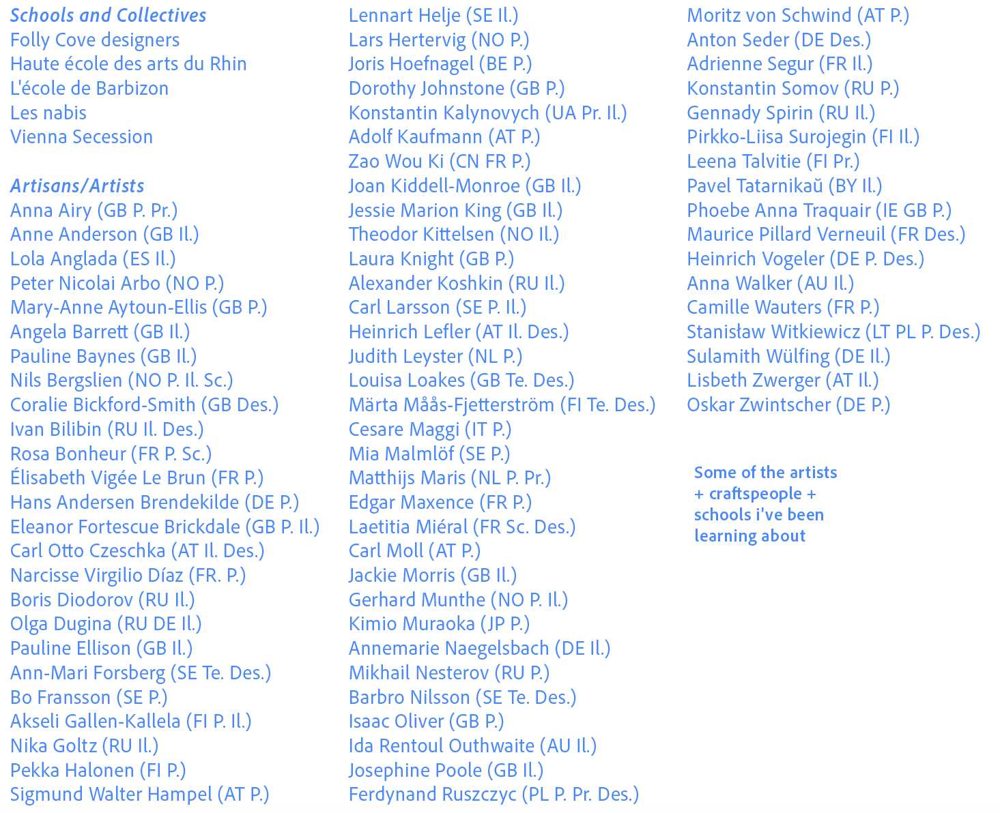

c) Research


I was in a lane noted for wild roses in summer, for nuts and blackberries in autumn, and even now possessing a few coral treasures in hips and haws, but whose best winter delight lay in its utter solitude and leafless repose. If a breath of air stirred, it made no sound here; for there was not a holly, not an evergreen to rustle, and the stripped hawthorn and hazel bushes were as still as the white worn stones which causewayed the middle of the path.1
APRIL
Media
Podcast: Artist Interview with Sarah Gillespie (link)
heijastuksia/reflections
New archetypes
Stories desperately need to have new characterisations for personalities and embodiments of different virtues, shaking up and refreshing complexions of charcter and nature. But the ancient archetypes (many of which have been forgotten or obscured) will still be essential because it's very important to understand the 'family tree' of character and spirit to determine everlasting, distinguishing features for them. Every answer to story issues today is in history and especially 'local' ones, which is a reason why global culture has such a poor effect on stories. They flourish and sing when given independence and some degree of seclusion, and both earthly and divine, essential things appear in beautiful renewed forms.
A curious child, applying to his ear
The convolutions of a smooth-lipped shell;
To which, in silence hushed, his very soul
Listened intensely; and his countenance soon
Brightened with joy; for from within were heard
Murmurings, whereby the monitor expressed
Mysterious union with its native sea.
Even such a shell the universe itself
Is to the ear of Faith; and there are times,
I doubt not, when to you it doth impart
Authentic tidings of invisible things;
Of ebb and flow, and ever-during power;
And central peace, subsisting at the heart
Of endless agitation.2
Choose not to surrender to the ongoing 'iphone-ification' of everything; slim, sleek, silver, visibly benign but sycophantically active, but above all sealed; sealed as a tomb is sealed but this one is transparent, promising an enrichment it will fail to provide. Smooth corners, flat polished surfaces and bright screens, it exists only under certain conditions and in a circle of acceptance; a web of nodes that enrapture, teasing a bliss of connectivity. How completely dreadful. Our creative bodies could do with a bit more creative chaos, cooking up storms for the sakes of our own values, breathing the fresh air of being led by your heart and spirit, not a deceitful web of lies prematurely antiquated and devoid of all grace and generosity, love, care and genuine, unadulterated attention.
Important research https://mubi.com/en/users/12191664